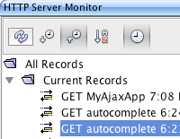
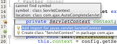
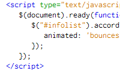

{kind=link}
Editor Support for HTML, JavaScript, and CSS
Take advantage of full syntax highlighting, code completion, pop-up documentation, and error checking for HTML, CSS and JavaScript, including HTML 5, JavaScript 1.7 and semantic highlighting for E4X (embedded XML objects). The IDE validates HTML through the validator.nu service. The Editor recognizes HTML code in JavaScript files and JavaScript code in HTML files. The Editor also recognizes HTML and JavaScript in XHTML, PHP and JSP files.
HTML 
You can use the editor in the IDE to quickly surround code with a tag or remove a surrounding tag by using new hints. You can also remove inline styles to a style block or .css file.
CSS
NetBeans IDE supports CSS 3. Refactoring, semantic highlighting, mark occurrences and other features have been adapted to CSS3 code. CSS code completion has been expanded to complete html elements, CSS3 properties and their values, new pseudo classes and pseudo elements, and namespace prefixes. Vendor-specific properties (dash prefix properties) have also been added to code completion. The Navigator window now shows css classes, ids, elements, namespaces and rules in separate element sets.
JavaScript
When you specify in the JavaScript Options panel browser types and versions, the editor provides you with browser compatibility information while you type.
Drag and drop handy code snippets for forms and tables
from the HTML Palette into the editor.
Edit CSS rules and preview the results in the visual CSS editor.
Using
jQuery to Enhance the Appearance and Usability of a Web Page
Ajax development
The NetBeans JavaScript and CSS editors are the perfect choice for Ajax development. The NetBeans IDE also comes with a client-side monitor to examine HTTP messages, an Ajax-ready environment for your choice of server-side scripting language (e.g., JSP, PHP, Groovy), out-of-the-box support for MySQL and Java DB, and extensive integration support for web frameworks and third-party JavaScript toolkits.
Toolkit Integration
The NetBeans JavaScript editor provides code completion and integrated documentation for popular toolkits such as jQuery, Script.aculo.us, Prototype, etc. Download your favorite JavaScript toolkits, copy the files into your project, and the editor will automatically recognize them.



